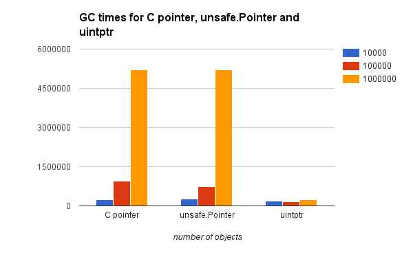

Go Tips Learned From Writing go-libxml2/go-xmlsec
Go Tips Learned From Writing go-libxml2/go-xmlsec
このエントリはGo Advent Calendar 2015のDec 15th分のエントリです。（追記：はてブは是非このURLで行って下さい！→ ../2015-12-14-7bcdfd35689d/index.html）
tl;dr: go-libxml2とgo-xmlsecを使うとXMLをツリーとして処理するだけでなくXSD検証やXML Signatureの生成もできるようにしました！でもなかなか一筋縄ではいかなかったよ！
go-libxml2とgo-xmlsec
HDE Incではセキュリティ系のアプリを作っているので最近はgo-jwxとかを開発していましたが、同様にXML Signaturesを使う必要のあるタスクがでてきました。
ところがぱっと見渡す限りGoでちゃんとXML Signaturesを生成できるものが見当たりませんでした。というか、どの言語を見ても基本的にはxmlsecをなんらかの形で使っているように見受けられました。この時点からGoからCの世界へと旅立たないと行けない事がわかっていたのですが、さらにさかのぼるとすでにいくつかあったlibxml2のバインディングも自分がPerl5のXML::LibXMLに毒されていたのでイマイチしっくりこず…
というわけで 最大限のフレキシビリティが欲しい！という気持ちと避けられないCバインディング開発を目の前にして私はlibxml2のラッパーであるgo-libxml2から始め、libxmlsec1のラッパーであるgo-xmlsecを書き始めたのです。
本エントリはその開発過程での自分の得た知見を書き出してみることにしました。本エントリーは大きく分けて二つのセクションがあります：ひとつはcgo特有の諸々について「cgoに関する知見」、そしてもう一つ、「その他諸々の気づき」としてcgoに限らないいくつかのポイントを書いてみました。
cgoに関する知見
GoからCライブラリを扱うのはとても簡単です。いくつかのおまじないを書けば、あとはC構造体や関数をC.hogeのように”C”という名前空間から利用する事ができます。
そんな簡単な仕組みを提供してくれるGoですが、やはりそれなりに注意しないといけない事がでてきます。以下は自分の経験上たどり着いたいくつかの気づきをまとめたものです：
Cへのアクセスは1カ所にまとめる
普通にGoを書いているつもりでいくつかのファイルにメソッド定義などをグループしておいておきたい気持ちになってしまいますが、色々と試行錯誤した結果Cライブラリに直接触るGoコードは1カ所にまとめるべき、という結論にたどりつきました
その理由の一つはcgoを使っている場合、cgo用に書いたCコードは原則そのファイル内でしか使えないということです。例えば以下のようなコードを書いたとします：
ここで定義されたC.MY_freeという関数は例え同じパッケージ内であっても別ファイルからは参照できません。結果、複数ファイルにわけて管理した上で関数をGoから共有するにはGoレベルでラッパーを（上記例のように）書くか、それぞれのファイルでC関数を再定義する必要があります。
さらにcgoのC名前空間はグローバルなものではなくimport “C”を呼んでいるパッケージローカルのものになります。例えば先ほどのMY_freeは裏側の処理ではfoo.C.MY_freeという名前になります。barというパッケージからC.MY_freeを参照してもそれはbar.C.MY_freeの事なので別の物を参照していることになります。
これは変数型についても一緒です。Goの中では厳密にはcharもfoo.C.charとbar.C.charという互換性のない（というか、あるかどうかGoにはわからない）型として認識されます。ということは複数のパッケージをまたがると例え同じCライブラリとリンクしていてもGo側からは違う型の変数なのです（これについてはまた後述）。
Cライブラリに直接アクセスする部分を分けるとこのような様々な問題が生じますし正直そんな事で悩むほうが時間の無駄なので素直に一つのファイルに全てまとめましょう。
go-libxml2、go-xmlsecでは全てgo-libxml2/clibとgo-xmlsec/clibというパッケージにそれぞれまとめるようにしました。
C構造体へのポインタを避ける
ポインタはGoコードを書く際に最大の敵のひとつとなります。というのもGCが走る際見に行くのはポインタだからです。つまりポインタが多ければ多いほどGCにかかる時間が増えるということです。
将来的にGoのGCが賢くなるかもしれませんが、実は現時点では*C.hogeのような型に対してもGCが走ります。なのでC構造体への参照をGo構造体の中にポインタとして格納しておくとその分GCに時間がかかります。
cgoを使ってC構造体への参照をGoから行う場合以下の三つの対処法がありえます：
- C構造体へのポインタを保持した場合 (*C.hogeを直接保持）
- unsafe.Pointerを保持した場合(unsafe.Pointer(*C.hoge)を保持)
- uintptrを保持した場合 (uintptr(unsafe.Pointer(*C.hoge))を保持）
C構造体へのポインタを保持するのがもっとも直感的な書き方です。unsafe.Pointerを使うとGoでCのvoid*を保持するのとほぼ同じ事をすることになります。uintptrは該当プラットフォーム上でポインタを格納するのに充分な大きさの整数型です。今回のようなCへのポインタを格納することもできます。
そこで三つのシナリオでGCを走らせる時間を比べてみました。コードはこちらにあります。引数として構造体の数を変えられるの、1万個、10万個、100万個でそれぞれどうなるか見てみましょう

このグラフで見るとuintptr以外はオブジェクト数が増えると明らかに時間がかかるようになっているのがわかるかと思います。Cポインタの場合は明らかにしてもunsafe.Pointerも同様に時間がかかるのがわかります。uintptrはほとんど変化が見られません。
uintptrからの変換に若干の手間がかかりますが、GCにかかる時間を考えるとuintptrを使うべきでしょう。（ちなみにこの辺りは将来的には変わる・最適化されるんじゃないかとか勝手に思っています）
uintptrを使う他の理由
uintptrを使う理由はGC性能上の問題だけではありません。C構造体を参照する際には前述の通り”C”名前空間を参照する事で行います。それでは例えばこの構造体を別のライブラリから使いたい場合はどうなるのでしょう？ （xmlsecはlibxml2の上に作られているライブラリですので、当然xmlNode構造体をやりとりするようなことが起こります）
ところが前述した通り、Goのxmlsecパッケージ内で”C.xmlNode”と参照しているものとlibxml2パッケージないで参照している”C.xmlNode”は別物なのです。
実はこれらは同じC名前空間に属しているように見える物の、Goの内部ではこれらはそれぞれ”xmlsec.C.xmlNode”と”libxml2.C.xmlNode”として定義されています。よってこの構造体を単純にC.xmlNodeとしてそれぞれのパッケージ間でやりとりすることはできないのです。
ところがC構造体への参照方法をuintptrにしてしまえば整数のやりとりになるので好きなことができるようになります！
なのでlibxml2/xmlsecのようにお互いに関係性があるCライブラリバインディングを作る場合や、同じlibxml2パッケージ内でもポインタのやりとりが必要な場合はこの手法をとるしか方法がないでしょう。
ただしこの時点でGoの型制約はもう全く意味をなしていない、ということに注意しましょう。unsafe.Pointerを使い始めた時点であとはあなたの書き方次第でどんなことでもできてしまいます。それがもたらす影響や責任を持てないのであればCの世界に入ろうという甘い考えは捨てましょう！
では全ての値をuintptrでやりとりすれば全部解決するかというと… さすがにCの構造体を直接パッケージ間でやりとりする事はすくなく、通常はなんらかのラッパーをかましていると思います。自分の場合はPointer()メソッドを提供するPtrSourceというインターフェースを定義して、そこからポインターをひっぱってくるという形にしました。
こうしておくとxmlsec.C.xmlNodeであろうと、libxml2.C.xmlNodeであろうと、将来作るかもしれないnantoka.C.xmlNodeであろうとPointer()メソッドを持っている何某から受け取れるという形になるのでよいのではないかなと思います。このPointer()の戻り値を使う際にはちょっと面倒ですがキャストをします
cgoは意外と速くならない
今回はlibxml2/xmlsecをGoから使いたいのでこの方法がベストと判断した上でコードを書いていますが、実際Go/Cの間のラウンドトリップはかなりコストが高く、例えばPerlを書いていた時にXSで処理を書き直すと得られていたあの高い満足感はなかなか得られません（というか、ラウンドトリップコストが高いというよりGo がそもそも速いのではないか…）。
さらに個人的に辛いのがGo/C間での文字列のやりとりです。C.CStringはメモリをアロケートした上にコピーが発生します。かといってこういう（良い意味での）変態さんが教えてくれるコードはただ「やろうと思えばできるよ」というだけで「やっていい」というわけではないので… しょうがないのでホットスポットに関してはスタック上に文字列のバッファを取っておいて自分でコピーを走らせてその領域へのポインターをCに渡すとか我ながらなかなか微妙な事をしています。
なので他のGoの世界の中で全てを終えられる限り性能をよくするためにCを書くのはあまり現実的ではないかな…と、コードを書いてて思いました。libxml2を完全にGoで置き換えられれば… 誰か…
その他の気づき
事実上の密結合だけどどうしても名前空間を分けたい！
前述の通りlibxml2内ではXMLノード(xmlNodePtr)をあちこちで使います。libxml2はCで書かれたライブラリですし、あまり名前空間の分離という概念が元々ありませんので、そのまま使っている限りあまり違和感はないのですが、これをGoのように別言語でラップしていくとやはり多機能なlibxml2のこと、機能ごとに少しずつ名前空間を分けたくなります。
Goの作法としては基本密結合しているコードは同じパッケージにとどめるべきなのですが、書いていて「いや、そうは言ってもこれは違うだろ」というものがどうしても出てくる事があります。
例えばgo-libxml2ではいわゆるXMLノードの操作関連に関してはdomというパッケージにまとめました（そうしないと名前が長くなるし、コードが整理できないと感じた）。
XPath関連のライブラリは（Goのレイヤーでは）ほとんどXMLノード操作とは無関係なので xpathという名前空間を使いたい！という気がします。すが、最終的にXPathを評価した時の結果にどうしてもXMLノードが絡んできます。
一方的にXPathがXMLノードを利用そして逆にXMLノード側からも簡単にXPathを使えるようにするとすごく楽になるので、どうしてもXPathをdomパッケージからも扱いたかったのです。しかしこれではdom→xpathとxpath→domの循環参照が起きてしまいます。
当初はひとつのパッケージに全てを詰め込む事でこの問題を解決していましたが、コード量が増えることでだんだんコードを分ける必要性が増してきました。そこで循環参照の可能性がある型に関しては全て別のパッケージのインターフェースとして分離しました。
これでxpath（と他の）domを参照するパッケージで関数の戻り値等を全てtypes.Nodeにしてしまえば参照はdom→ xpath、xpath→ typesとなり、循環がなくなります。余談ですが、Goのinterfaceが暗黙的に満たされるおかげでdomパッケージでtypesパッケージを参照しなくて良いのが循環参照を回避するためのキモですね。
それでも駄目な時は… 関数を登録
このようにして循環参照を無くしていきましたが、それでもどうしてもxpathパッケージ内からdomパッケージ内で使われている関数が必要になってしまいました。具体的にはCポインタからノードを作る作業がどうしてもxpathパッケージ内で発生してしまうのです。色々考えてみましたがどうしてもここだけは回避できません。
そこでここは最後の手段です。
必要なのはノードを作成するための関数なのでまず関数を格納するための変数をxpath内に宣言しておきます。
そして domパッケージのinit()関数でその関数を初期化してしまう、という乱暴な手を使いました。
残念ながらこれでxpathパッケージ単体では使えなくなりましたが、このトレードオフはこのケースに限っては良い物だと思っています。
というわけで色々と考える事はありましたが、良い感じにできあがってきたので、是非go-libxml2/go-xmlsecを試してみてください！
明日のGo Advent Calendar 2015はr_rudiさんです。